A Stable Diffusion 1.5 image studio for non-experts — with a fully automated artist → LoRA training pipeline.
Latent Studio is a web app built around a Stable Diffusion 1.5 pipeline and designed for people who have never heard of "latent space". You pick a base model and an art style, type a description, and generate an image — every control is named in plain language and then, next to it, gives both its real technical name and what its scale actually does. Every image is fully reproducible: its complete settings (model, style and strength, prompt, seed, guidance, steps) are embedded in the PNG, and one click loads them back.
Six of the art styles are custom LoRAs — Katsushika Hokusai (ukiyo-e woodblock), Utagawa Hiroshige (ukiyo-e landscape), J. M. W. Turner (atmospheric landscape), Claude Monet (Impressionism), Albrecht Dürer (Renaissance engraving) and Rembrandt van Rijn (etching) — produced not by hand-curated datasets but by an automated pipeline: an artist name goes in, a validated, published LoRA comes out. Once the pipeline was working, a new style cost about 8 minutes of GPU time at the original fixed step count, which turned the interesting question from "can we train one?" into "which artists does the data even allow?" — see the findings below. On top of the core generator, the app offers systematic parameter/seed sweeps for exploration. (ControlNet — the brief's optional advanced path — was built but kept secondary to the training pipeline; it now lives behind an experimental, default-off toggle while its Colab reliability is re-verified — see Scope.)
The interface is deliberately built for non-experts; the design choices that follow all serve that goal.
The brief names an optional advanced path — ControlNet conditioning. This project put its advanced ambition into the automated, measured LoRA training pipeline below instead. Turning an artist's name into a public-domain-verified dataset, a captioned training run, and a LoRA that is scored against the artist's real work before it is allowed to ship is where the interesting problems — and every finding on this page — actually lived.
ControlNet was built and is functional: canny and depth conditioning, multi-ControlNet, and combinable with a style LoRA (the reference fixes the composition, the LoRA paints it). In local testing (Apple MPS) it runs cleanly — loading, single images and grids all generate. On the Colab demo runtime, however, it raises errors that do not reproduce cleanly: different runs fail differently (a meta-tensor load error, a dtype mismatch, a grid-time exception) and none of them surface locally under the same library versions, which points at the runtime/session rather than the logic. Since a demo that fails unpredictably is worse than one feature fewer, ControlNet was kept out of the shipped app. That status is being revisited: the code has since been reverted to an experimental, default-off toggle in the Setup tab for renewed testing on Colab GPU hardware. This section reflects where that investigation stood at the time it was written and will be rewritten once the retest is complete and a final call made on whether ControlNet joins the default experience.
Every style in the app is produced by a self-contained Colab workflow (it is deliberately not a live feature of the app). Give it an artist name and it runs, in order:
The Metropolitan Museum API only offers full-text search, which matches anything that merely mentions an artist — for Hokusai that left roughly two genuinely-his public-domain images. The Art Institute of Chicago API instead filters on the actual artist field and a public-domain flag, yielding hundreds of verified CC0 works per artist. Choosing the right data source was the single biggest unblock.
A style LoRA generalises only if the trigger word owns the style and the captions own the content. If captions are too sparse, the style bleeds into the training subjects ("subject bleed": every output turns into a mountain or a wave). So we caption the content with BLIP and then strip medium/style words ("painting", "engraving", "sepia") so those attributes attach only to the trigger — and we deliberately draw a subject-diverse sample so the style has varied content to attach to.
Early on the style barely showed up unless the strength was pushed very high. Two causes: the trigger word was often simply missing from the prompt, and — because we train the UNet only (text encoder frozen) — a novel trigger token is inherently weaker. We fixed it from both sides: the app now applies the trigger word invisibly at generation time (recorded in the metadata for reproducibility), and the training side uses richer captions and more steps.
We first named the styles after the artists, with triggers like sksHokusai and
sksTurner. They worked, but a strength sweep exposed something off: at LoRA strength
0 — where the adapter mathematically contributes nothing — the image was already
stylised and already differed from the no-LoRA baseline at the same seed. The cause was not the
adapter but the trigger: since the token still contains "Hokusai"/"Turner", the base model
already associates it with woodblock prints / atmospheric oils, so part of the "style" at
low strength came from Stable Diffusion's own prior via the prompt, not from anything we trained.
That clarified two controls we had been conflating: the trigger word decides whether the concept is present in the prompt at all, while the adapter strength decides how strongly the trained delta is applied on top. A name-like trigger rides the base model's prior — it fires reliably but blurs attribution (you cannot separate "what the model already knew" from "what the LoRA added"). A neutral, semantically-empty token has almost no prior, so strength 0 stays neutral and any style that appears is genuinely attributable to training.
So we switched all project LoRAs to a single shared neutral trigger, sks.
Because the app only ever loads one LoRA at a time, one token is unambiguous — it resolves to whichever
style is active. This is exactly the "inherently weaker" novel token from the previous point, so we
lean on richer captions and more steps to make the training carry the style rather than the
prompt. The payoff is an honest strength sweep (visible in the LoRA-weight sweep below): strength 0
≈ the base model, and the ramp toward 1.0 shows the adapter's own contribution.
Turner's source engravings are heavily sepia-tinted, and the LoRA inherits that cast. Rather than discover this by eye, the preprocessing now computes a colour diagnostic (overall colourfulness plus a "mono-ratio" measuring how uniformly the hue points one direction) and flags a monochrome/tinted corpus automatically — which also lets us screen candidate artists by their data before spending GPU time. A second check auto-trims the cream paper mount around scanned prints (using a median + "light-mount" test) while leaving full-bleed paintings untouched.
Once a full training run cost about eight minutes, the obvious move was "train more artists". The limit
turned out not to be the GPU at all, but what is legally usable. The Art Institute's holdings and
its public-domain holdings are very different things: the museum has 33 works by
Käthe Kollwitz — and not one of them is public domain (she died in 1945, so her work
is still in copyright). The pipeline refused all 33, which is exactly right: the
is_public_domain filter is a licensing guard, not a convenience. Being able to see an image on
a museum website does not make it ours to train on.
Coverage also varies wildly between artists — roughly 2,600 usable public-domain images for Toulouse-Lautrec and 2,300 for Hiroshige, but only 19 for Van Gogh and 6 for Rosa Bonheur. One sobering side-effect: the public domain skews heavily male, so "assemble a diverse roster" is constrained by what history actually left in the commons. Of the women we checked, only Mary Cassatt (~236) and Julia Margaret Cameron (~196) had enough public-domain work to train on at all.
The LoRAs built from small datasets were clearly worse, and the first fix was a real one. Our training
length had been a fixed 2,400 steps, calibrated for a 60-image set — about 40 steps per
image. On a 19-image set that silently becomes 126 steps per image, which burns the style
in; on a 150-image set it is a mere 16, which leaves it undertrained. So steps per image,
not total steps, is the meaningful knob, and training length now scales with the dataset
(images × 40, floored and capped).
A second, self-inflicted loss compounded the scarcity: images were fetched at 843 px, the border-trim then removed the paper mount, and what remained often fell below the 384 px minimum and was discarded. Print-heavy artists suffered most — of Cassatt's ~236 usable public-domain works only 41 survived preprocessing; fetching at double the resolution recovered some, but not enough to matter.
What neither fix could do was manufacture data that isn't there. Once the pipeline was correct we retrained every style and compared before against after (the before/after study below) — and the clean result is that below the 150-image target, no amount of step-tuning rescues the style. Scaling the training length is necessary; a large, representative corpus is what actually decides whether a style holds.
Our validation compared each LoRA against the base model. It never once looked at the artist's actual work — so the question that decides whether a style ships, does this resemble the source data?, was still being answered by gut feeling. With several LoRAs trained half-attentively across an evening, we could no longer say which runs had been good ones. A pipeline that trains automatically and then judges by vibes has simply moved the unreliability somewhere less visible.
So the last step became a scorecard. Every number is a difference against the same prompt and the same seed rendered without the LoRA: content is held constant, so whatever is left over is the adapter's doing.
The interesting part is where style gain is measured. Comparing a generated mountain landscape to a corpus full of mountain landscapes proves nothing — the similarity could just be the shared subject. So the style metric is computed only on deliberately modern prompts: a bicycle, a city street with traffic lights, a plate of food. No public-domain corpus from before 1900 can contain those. If the output still looks like the artist, that similarity cannot be a memorised training motif — it can only be style. The same reasoning fixed our off-domain grid, whose original prompts ("a portrait", "a vase of flowers") were quietly on-domain for Cassatt, Monet and Renoir and therefore proved nothing either.
The numbers rank the LoRAs; the contact sheet decides — the artist's real artworks in the top row, our generations at each strength below, so the claim is always checkable by eye. And because the scorecard accepts a Hugging Face repo id, it can grade what is actually published, not merely what happens to be on the machine that trained it.
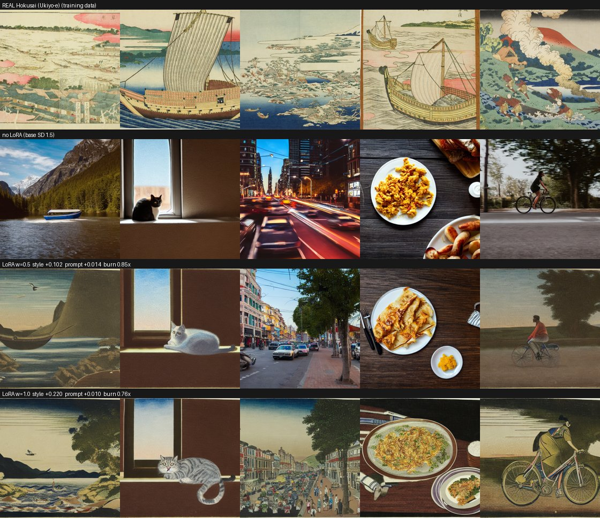
style +0.220 figure is measuring.
Prompt-following is intact (+0.010) and there is no burn-in
(0.76× — the print palette is in fact less saturated than SD's default).
Verdict: ship at strength 1.0.
Two things fell out of this that we would not have guessed. First, a single shared validation prompt is itself a bug: "a boat beneath a mountain" is on-theme for Hokusai and says nothing whatsoever about Rembrandt, whose corpus is faces in shadow — we had been making good LoRAs look weak by testing them on the wrong subject. Each artist now carries their own on-domain prompt. Second, the fix for a disappointing LoRA is usually not to retrain it: if it is over-trained, an earlier checkpoint — already sitting on disk from the same run — is ten minutes away, while a retrain is over an hour. Measure first, then decide; retraining on suspicion is how a deadline gets eaten.
Not retraining on suspicion was the right first call — but it left the real question unanswered: does more data actually make a better style, or does it only feel that way? Guessing wasn't good enough, so we retrained every style under the corrected pipeline (the 150-image target, training length scaled per image) on Colab, and compared each one before against after. Scaling training length with the dataset has a compute cost of its own — a 150-image set now runs up to 6,000 steps instead of the original fixed 2,400 — and retraining nine styles at that length inside the deadline is where the free T4 tier stopped being practical. This retraining pass ran on a faster, paid-tier L4 GPU instead: the corrected methodology decided what to retrain, but the faster GPU is what made retraining the whole roster feasible at all — time and compute, not just insight, had been the limiting factor. The comparison is deliberately held on a single device: the same seed produces different images on Apple's MPS and Colab's CUDA, so an honest before/after has to keep the GPU fixed. Every figure below is CUDA.
The reference counts reframed the experiment before a single image was scored. The "bigger dataset" only actually happened for three artists — Dürer, Turner and Hokusai went from about 60 images to 150. For Monet, Cézanne, Cassatt and Van Gogh the public domain had nothing more to give, so their counts were unchanged; and because training length now scales per image, those small sets trained fewer steps than the old fixed 2,400 (Van Gogh 800, Cézanne 1,280). Hiroshige and Rembrandt were already at 150 in both runs, which makes them a built-in control: retrain the identical dataset and watch how far the score drifts on its own.
| Style | Images (before → after) | Style gain, CUDA @ str. 1.0 | Resembles the artist? (eye) |
|---|---|---|---|
| Dürer | 60 → 150 | +0.246 → +0.265 | yes — the clearest gain |
| Turner | 60 → 150 | +0.289 → +0.286 | yes |
| Hokusai | ~60 → 150 | +0.211 → +0.220 | yes |
| Hiroshige (control) | 150 → 150 | +0.334 → +0.328 | yes |
| Rembrandt (control) | 150 → 150 | +0.250 → +0.239 | yes |
| Monet | 40 → 40 | +0.245 → +0.243 | on its own subjects only |
| Cézanne | 32 → 32 | +0.237 → +0.223 | no |
| Cassatt | 46 → 46 | +0.181 → +0.177 | no |
| Van Gogh | 19 → 19 | +0.211 → +0.197 | no |
On the number, the retrain barely moved anything. The two controls set the scale: retraining an identical 150-image dataset shifts the score by about ±0.03, so that is the noise floor — and almost every before/after delta sits inside it. Only Dürer clearly gains (+0.019 at full strength, and +0.034 at half, where the extra images let the engraving style engage earlier). If the CLIP metric were the whole story, the honest headline would be "more data changed almost nothing".
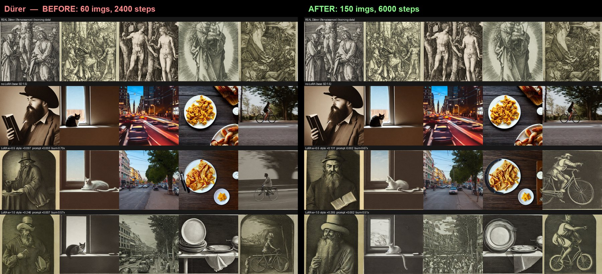
But the eye tells a cleaner story than the number, and it is the one that set the roster. Every style that reached 150 images — Hokusai, Turner, Dürer, Hiroshige, Rembrandt — holds the artist's look across all five prompts. Every style the public domain capped below that — Cézanne (32), Cassatt (46), Van Gogh (19) — does not, at any strength. Monet (40) is the honest exception: convincing on its own subjects (water lilies, bridges) but fraying on the modern off-domain prompts in a way the 150-image styles never do. So the line between a style that ships and one that doesn't is essentially the dataset-size line, and the threshold here is the 150-image target.
The most useful thing this study surfaced is that the metric cannot make that call. CLIP style-gain scores Cézanne at +0.223 and Hokusai at +0.220 — statistically the same — yet Hokusai reads convincingly as ukiyo-e and Cézanne does not read as Cézanne at all. The number is a floor check ("nothing is on fire"), not a quality ranking; the pattern that actually decided the roster was visible only on the contact sheet. That is the concrete argument for keeping a human at the gate.
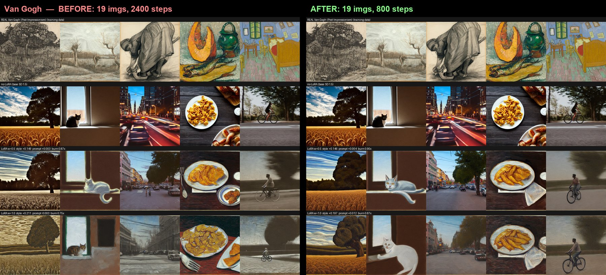
So the roster: the six styles that convince — Hokusai, Hiroshige, Turner, Monet, Dürer and Rembrandt — ship in the app; Cézanne, Cassatt and Van Gogh stay here as documented limitations rather than shipped styles. The meta-point is worth the GPU it cost: "more = better" is now a measured, bounded claim rather than a hunch — more data helps until you have enough (around 150 varied images), after which the metric saturates and the eye stops improving — and the binding limit on the whole roster was never compute, but how much public-domain work an artist happened to leave behind.
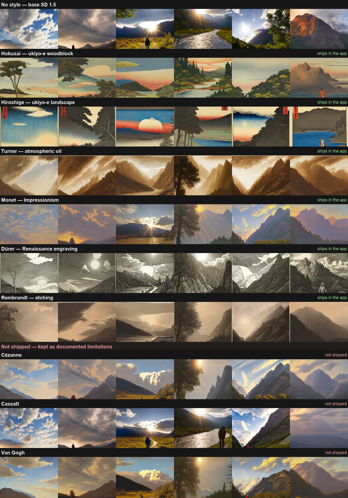
Two days before the deadline, model downloads in Colab began stalling part-way into a large file — reproducibly, with no error, no timeout and no retry. It looked like a network problem, and network problems are where debugging goes to die: every hypothesis is plausible and none is cheap to test.
So instead of testing them one at a time, we ran a single diagnostic that measured all of them in the
same runtime, in the same minute, against the same file — and tested each download path in a
subprocess, because huggingface_hub freezes its configuration into module constants
at import time (an environment variable set in a later cell is a silent no-op, a trap that had already
cost us one round of "the fix didn't work"). Raw HTTPS straight at the CDN pulled 246 MB in
one second; the plain hub downloader finished in 1.2 s; the same
call over Xet — the Hub's default transfer backend — stalled at ~78 MB and
never recovered. Network, region, disk, RAM, token and rate limits: all exonerated at once.
The tempting conclusion — "Xet is broken, disable it, done" — was wrong, and it took a second
round to see why. Disabling Xet turned the silent hang into an honest error, and that error named the
real culprit: 403 Forbidden — Auth failed: SignatureError: invalid key pair id. Hugging Face's
CDN was rejecting Hugging Face's own signed download links. The Hub's storage is
Xet regardless of what the client is told, so the download is redirected to that CDN either way; turning
Xet off changes how the bytes are fetched, not where from. A public issue
(huggingface/datasets#8328) confirmed it,
down to the same broken signing-key id — a live platform outage, nothing to do with this project, and
nothing we could fix.
What we could exploit was that the failures are intermittent and the Hub cache resumes: a failed attempt keeps every file it already fetched. So the notebooks now pre-fetch every model in a retry loop before the app starts. Even when most requests fail, the loop converges — it only has to roll the dice often enough. Disabling Xet remains necessary for a reason worth stating plainly: you cannot retry a hang. The Xet client waits forever on the broken CDN instead of raising, so the first fix had to happen before the second one was even possible.
Three lessons. "It works on my machine" was not evidence — locally the model was cached, so the download path was never exercised; the absence of a symptom said nothing. An optimisation added for speed had quietly become the single thing standing between the project and a working demo. And the first plausible fix that makes a symptom change is not the same as the cause: the diagnostic that turned a hang into an error message was worth more than the fix it appeared to be.
Model switching frees the previous pipeline before loading the next, so VRAM never doubles (measured:
it stays flat across switches and returns to zero on unload). Seeds go through torch.Generator
— on Apple Silicon deliberately on the CPU device — so identical settings reproduce an identical image
on both the local Mac and the Colab T4.
Jargon was removed from the labels, a first-run hint was added, the output and history were unified into a single preview gallery (newest shown large), and a subtle one-click lag in the download button was fixed (the file is prepared reactively rather than in the button's own click handler). Beyond that, three decisions did most of the work.
The default view hides the settings, not the prompt. The first version put a JSON dump of every image's metadata permanently on screen — the one thing a beginner has no use for — while the thing they actually want to see, the exact words that made this picture, was buried inside it. Now the prompt sits under the image and the full settings live behind an Advanced switch. Nothing is lost: the settings are embedded in the PNG regardless, so "reuse these settings" still works on any image the app has ever made.
Loading had to become visible, which meant leaving Gradio's own progress behind. A first run downloads several gigabytes and then denoises for minutes; a spinner is not an answer to "is this working?". Because a diffusers call blocks, the app runs the work on a worker thread and streams progress from a tracker. The numbers come for free from an observation: diffusers' denoising loop and huggingface_hub's downloader are both tqdm subclasses, so patching tqdm once reports megabytes while a model downloads and steps while an image renders — without threading a callback through the pipeline at all. A second bar counts images during a grid, and both carry an ETA.
Controls that don't apply grey out instead of disappearing. This started as a bug hunt: sliders would render blank and only appear once you touched them. The cause is that Gradio mounts a slider inside a hidden container at zero width, so it never computes its geometry. Rather than fight that, the layout stopped hiding things — a setting that doesn't apply right now is disabled and says why in its own description line, which is better for a beginner anyway (you can see that "style strength" exists before you have picked a style). The rule has one honest exception, found by measuring rather than assuming: Gradio renders a disabled number field identically to an enabled one — same colour, same opacity, only the mouse cursor differs — so greying one is a lie. Number fields don't suffer the mount bug, so those are hidden instead. Each mechanism is used where it actually communicates something.
Every grid below was generated in the app itself, with its Compare mode — no separate offline script. That is the point: the parameter study and the product run on the same engine, so a reader can reproduce any cell by typing its settings into the same interface. Each grid was exported as a PNG plus a JSON carrying the full settings of every single cell, so no image in this study is a dead end.
Held fixed everywhere: the prompt "lone traveler on a path beside a river, a great mountain behind, the low evening sun breaking through clouds", the negative prompt "lowres, blurry, watermark, text", 512×512, and — outside the CFG × Steps grid — prompt strength 7.5 and 30 steps. The style under test is the project's Katsushika Hokusai LoRA. Everything here was rendered on CUDA (a Colab T4) — the same device as the live demo — so every cell is reproducible on the machine that will show it.
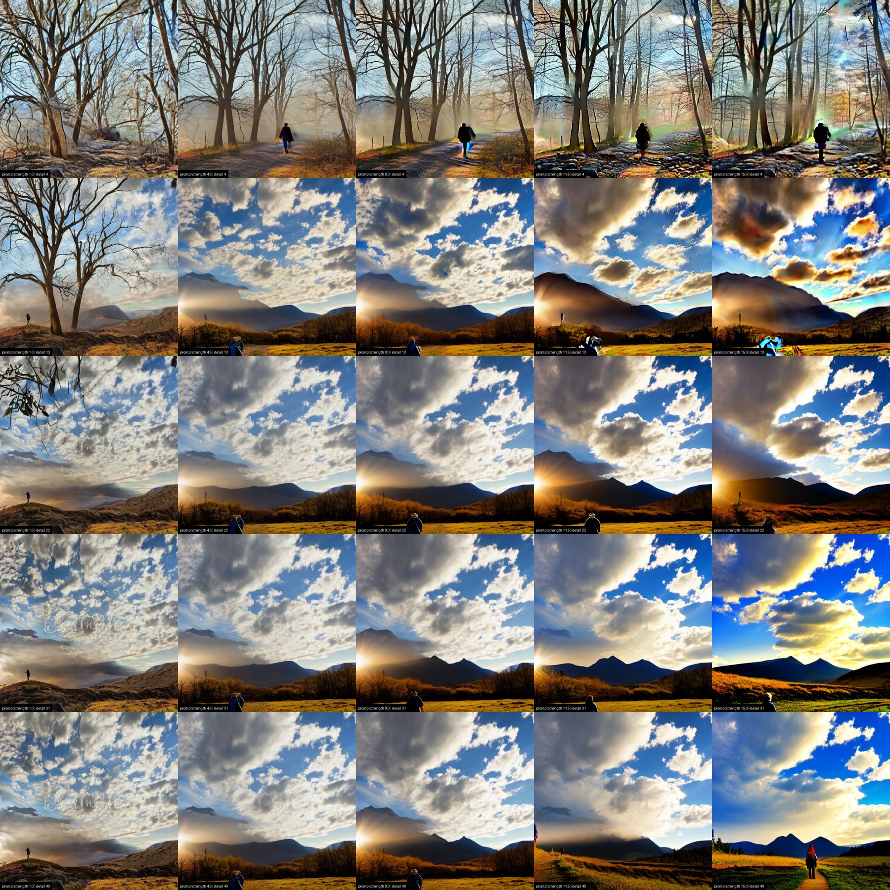
The seed pins the noise, not the picture — composition moves in both directions. At 4 steps (the whole top row) the sampler never reaches the wide river-and-mountain scene the other four rows share: it settles instead on a close, fog-bound tangle of bare trees, missing the river, the mountain and the sun break entirely. That is step count deciding what is in frame, not just how finished it looks. From 13 steps on the wide scene does hold, but reading across a row still isn't just "how, not what": the mountain's outline, the sun's position, the grass colour and where the traveller stands all shift column to column, alongside the expected climb from CFG 1's washed-out, low-contrast read to CFG 15's brittle, oversaturated one. Read down a column and the first jump, 4 → 13 steps, still does most of the work, and 31 → 40 still changes almost nothing for most of a step budget more render time.
Two cells earn a closer look than "washed out" or "oversaturated" cover. At CFG 1, 4 steps — top-left, the least-guided and least-resolved corner — most of the prompt simply never arrived: no river, no mountain, no readable light source, just a muddy close-up of tree trunks around one indistinct dark shape. At CFG 1, 40 steps, the extra steps resolve a full scene again, but a faint signature is legible woven into the clouds — a memorised stock-photo watermark surfacing out of SD 1.5's training data, unrelated to anything in the prompt. And at the opposite corner, CFG 15, 4 steps, "oversaturated" undersells it: the whole frame carries a faint moiré texture, a green halo sits around the traveller, and a pale, textureless patch floats top-right with no source in the scene — CFG and step count compounding into genuine artefacts, not just hot colour.
One more thing worth naming, because it's a finding about reproducibility itself, not about this image: an earlier render of this exact grid — same prompt, same seed, same checkpoint, only the detail range set to 5 → 50 instead of 4 → 40 — hit a flat, textureless black square at CFG 11.5, 5 steps: the safety checker's silent block (this project's own app now surfaces that as an in-panel error instead of a silent black image; see above). That cell doesn't reproduce here — CFG 11.5 at 4 steps is a normal, if hazy, render. A fixed seed pins the noise, not immunity from a one-off trigger that a handful of steps either side can tip into or out of — the same lesson the rest of this section keeps landing on, from a different angle.
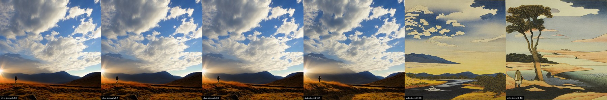
The coarse sweep reads like a hard switch. At 0.0 through 0.6 the image is still a photograph; by 0.8 it has become a woodblock print — flat colour fields, paper grain, a muted earth-and-indigo palette, forms reduced to outlined shapes. At this step size (0.2) that looks like a single snap somewhere between 0.6 and 0.8. The finer sweep below shows it's more precise, and less abrupt, than that.
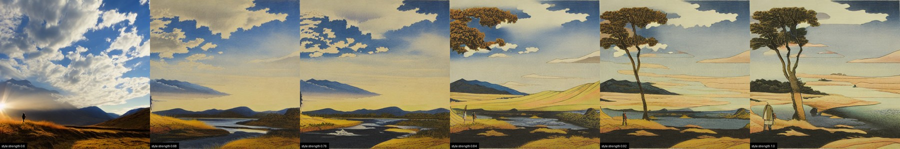
A finer sweep splits the transition into two different things happening at two different rates. The medium flips fast: at 0.6 the frame is still a photograph, by 0.68 — one 0.08 increment later — it is already rendered as a print, flat colour fields and all. But at 0.68, and still at 0.76, that print is close to empty next to the photograph it replaced: no pine tree, no traveller, just hills and a river. The content catches up far more slowly, and it arrives with its own surprise — at 0.84 a large, gnarled pine suddenly fills the top-left corner of the frame, with no equivalent anywhere in the prompt (which never mentions a tree at all). That tree is a motif the LoRA is hallucinating on its own, not a stronger rendering of anything asked for — the clearest single instance of what the training scorecard calls prompt drop, visible here with the naked eye. From 0.84 to 1.0 the scene keeps changing around it: the fields gain a ploughed texture, the shoreline redraws itself twice, and the traveller — who had actually disappeared from the frame at 0.68 and 0.76 — reappears and changes pose and dress again before 1.0. So the render medium snaps over a single 0.08 step, but the picture the LoRA is actually drawing keeps moving for the rest of the slider's range. It is why the app caps the style-strength slider at 1.5 and warns in-line that "above ~1.2 it usually burns".
Three 5×6 grids: seeds 1312–1316 across the columns, style strength down the rows. Same prompt, same seeds, same CFG/steps as everywhere else on this page — only the checkpoint (and, on one grid, the strength range) changes. On SD 1.5 base and epiCRealism, strength runs 0.0 → 1.25 in six stops, and strength 0 is the LoRA loaded at zero weight — the bare checkpoint, text conditioning byte-identical to every other row, the same "strength 0 = ground truth" logic as the earlier 25-seed version this replaces. DreamShaper 8's grid instead runs 1.0 → 1.25: the earlier, coarser sweep already established that DreamShaper is fully painterly by 1.0 (see below), so a 0-start range would spend five of six rows re-confirming that instead of showing what changes above it.
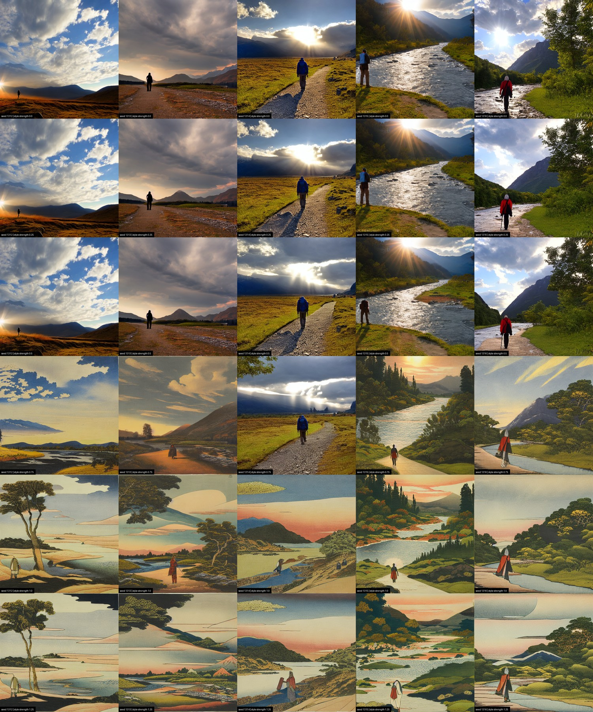
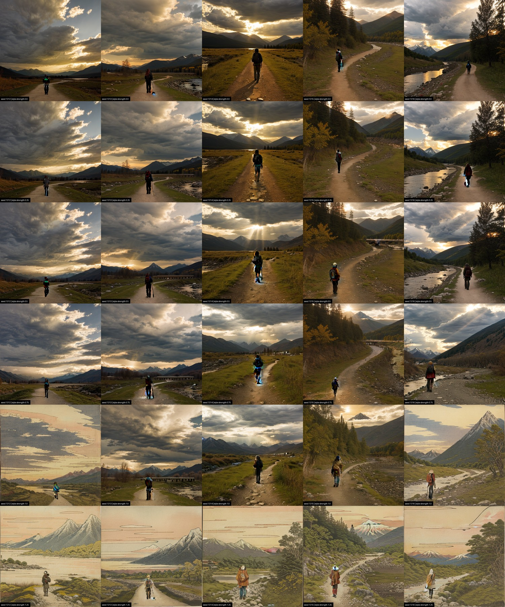
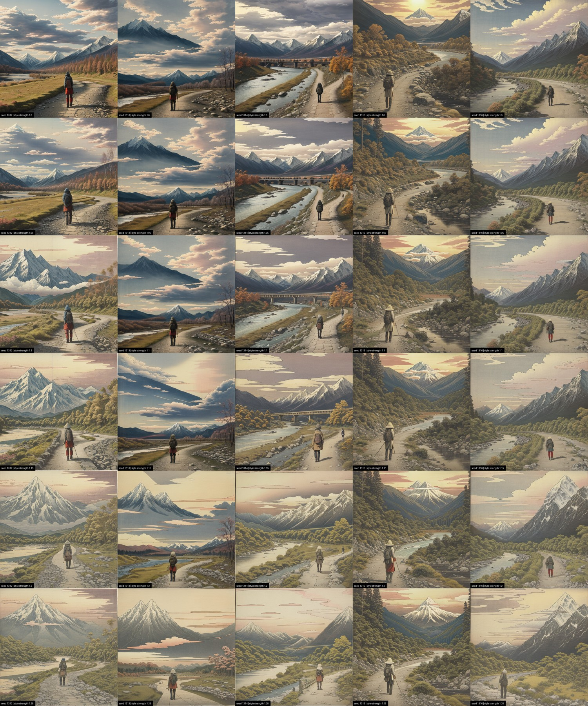
epiCRealism doesn't refuse the style — it just needs more of it before it takes. On SD 1.5 base the flip already lands between strength 0.6 and 0.8 (previous section); this grid confirms it at the seed level — none of the 5 seeds are still photographs by 0.8. epiCRealism, at those same six stops, stays fully photographic through 0.75 — all 5 seeds, no exceptions. At 1.0 it finally starts: 2 of 5 seeds cross over into print rendering, the other 3 still photographs. By 1.25, all 5 have converted. So the crossover this project's earlier, coarser 25-seed sweep could only bracket ("still climbing at 1.0, unmeasured above it") sits between 1.0 and 1.25 for this checkpoint — a full half-a-strength-unit later than the neutral base.
It doesn't just arrive later — it arrives with more in it. epiCRealism's converted cells at 1.25 carry visibly finer texture than SD 1.5 base's own cells at the same strength: more striation in rock and snow, more pattern in the traveller's clothing, more layering in the clouds, where the base checkpoint's print stays flatter and simpler. Photorealism doesn't defeat the style here — it delays it, and once it loses, it keeps contributing its own fine-detail bias underneath the print rendering. "Style strength 1.0" still isn't a portable quantity — the concrete number just moved: on this checkpoint it's closer to 1.25, not 1.0, and the honest reference for judging a style stays the neutral base.
DreamShaper 8 doesn't resist the way epiCRealism does — the earlier, coarser sweep already showed every seed turning painterly by strength 1.0. What the 1.0 → 1.25 grid adds is what happens once it's already "won": DreamShaper doesn't stay in its own idiom, it starts losing ground back to Hokusai. At 1.0 every cell reads as DreamShaper's own polished concept-art — dense, individually rendered trees, photographically shaded clouds, a generic hiker in modern outdoor gear. By 1.25, the sky in every cell has flattened into the same line-drawn, flat-colour cloud bands the SD 1.5-base grids show at full conversion, the mountains simplify toward single iconic peaks, and the traveller has picked up a conical hat and a red robe — Hokusai's print-medium signature surfacing inside a checkpoint that, at 1.0, showed none of it. It's a partial convergence, not a full one: the foliage stays DreamShaper's own dense, painterly mass rather than flattening into Hokusai's woodblock fields. This is the concrete shape of the in-line warning that "above ~1.2 it usually burns" — not a colour blow-out like high CFG, but the two style priors visibly fighting over different parts of the same frame.
One artefact is worth naming rather than cropping out. The red cartouches and pseudo-seals that surface across the base checkpoint's converted cells are not decoration the model invented — they are the furniture of the medium. Training on museum scans of prints teaches the printed object: margins, seals, title blocks, folds. A style LoRA learns whatever is consistently in the frame.
Twelve renders, five prompts, six styles — every generated PNG already carries its full settings embedded in the file, and the same block sits behind each "settings" link below. All rendered on CUDA (a Colab T4), SD 1.5 base, style strength 1.0, 512×512.
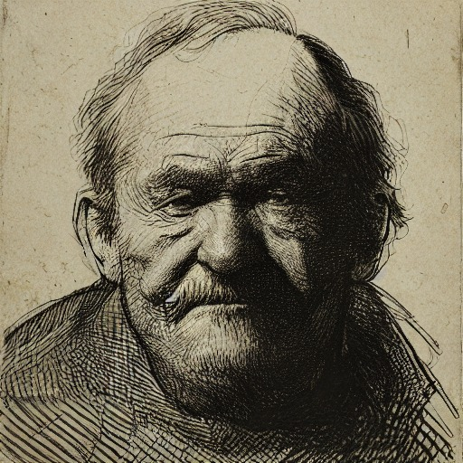
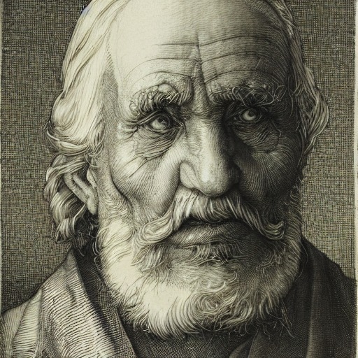
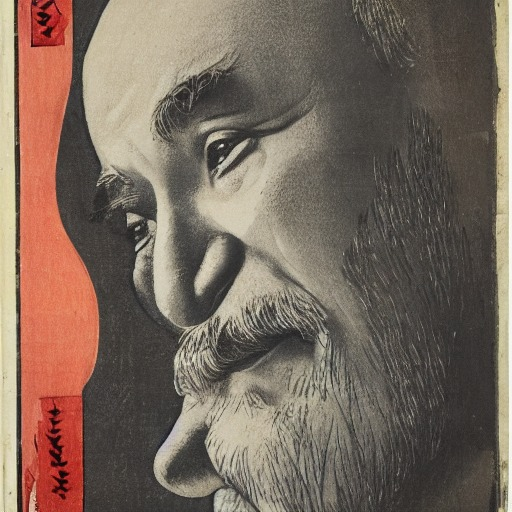
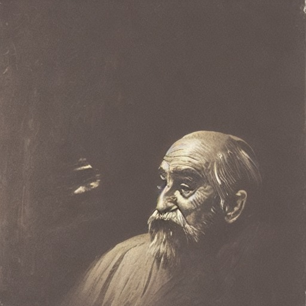
The same portrait prompt through four styles is the clearest single demonstration of what a style LoRA changes: Rembrandt's chiaroscuro, Dürer's engraved line, Hiroshige's flat print colour, and Turner's atmospheric haze are all recognisably themselves, on the same face.
| Name | Source | Licence |
|---|---|---|
| Stable Diffusion 1.5 (base) | stable-diffusion-v1-5/stable-diffusion-v1-5 | CreativeML OpenRAIL-M |
| DreamShaper 8 | Lykon/dreamshaper-8 | CreativeML OpenRAIL-M |
| epiCRealism | emilianJR/epiCRealism | CreativeML OpenRAIL-M |
| Hokusai (Ukiyo-e) LoRA | self-trained; training data CC0, Art Institute of Chicago | CreativeML OpenRAIL-M |
| Hiroshige (Ukiyo-e) LoRA | self-trained; training data CC0, Art Institute of Chicago | CreativeML OpenRAIL-M |
| Turner (Oil) LoRA | self-trained; training data CC0, Art Institute of Chicago | CreativeML OpenRAIL-M |
| Monet (Impressionism) LoRA | self-trained; training data CC0, Art Institute of Chicago | CreativeML OpenRAIL-M |
| Dürer (Renaissance) LoRA | self-trained; training data CC0, Art Institute of Chicago | CreativeML OpenRAIL-M |
| Rembrandt (Etching) LoRA | self-trained; training data CC0, Art Institute of Chicago | CreativeML OpenRAIL-M |
| CLIP ViT-B/32 (used for scoring only, not generation) | openai/clip-vit-base-patch32 | MIT |
The six LoRAs above are the styles that passed review and ship in the app; three further LoRAs — Cézanne,
Cassatt and Van Gogh — were trained on the same CC0 Art Institute of Chicago data but
appear only in the findings above, as documented limitations rather than shipped styles.
No LoRA was trained on the likeness of a real, living person: every artist involved died long ago and
every training image is public domain (CC0), verified per-object against the Art Institute of Chicago's
is_public_domain flag rather than assumed. The safety checker stays active in the
public-facing app.